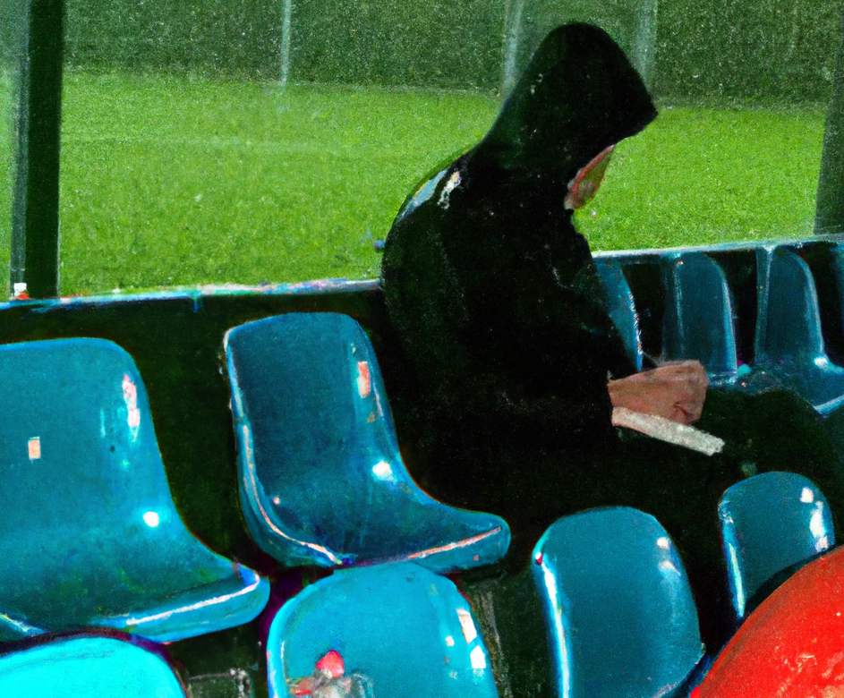

Chapter 1: The Frustration
October 7, 2023
It was a rainy night in Manchester, and Pathfinder, a die-hard Manchester United fan, couldn't help but feel the weight of disappointment as he watched his beloved club struggle in the Premier League. The team he had supported through thick and thin was languishing in mid-table, playing uninspiring football under their current manager. The frustration had reached a boiling point, as he observed the lackluster performances week after week, with uninspired tactics and underperforming stars. The glory days of Sir Alex Ferguson seemed like a distant memory.
